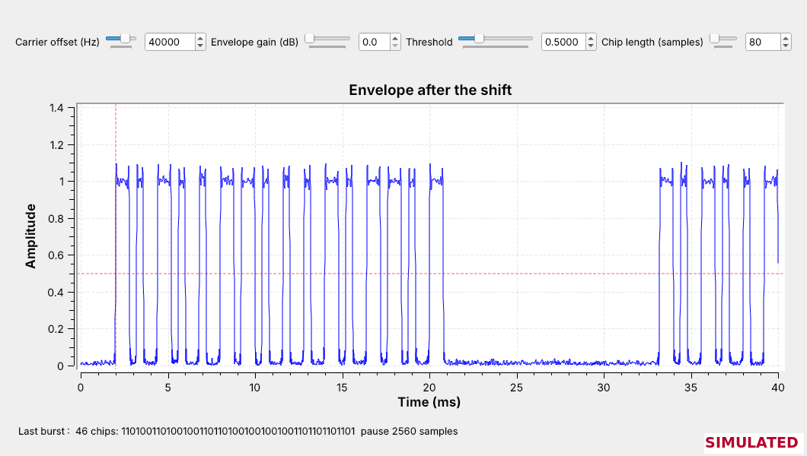
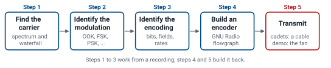
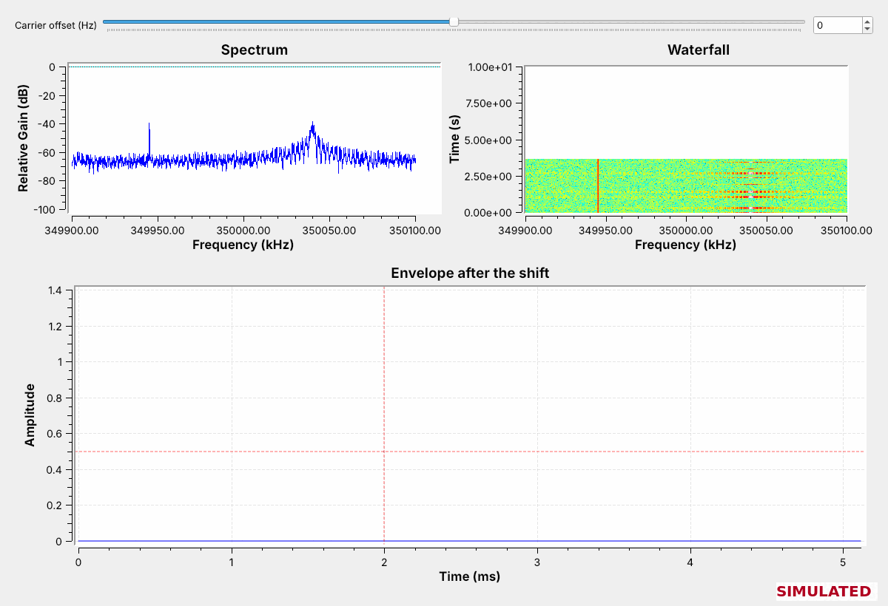
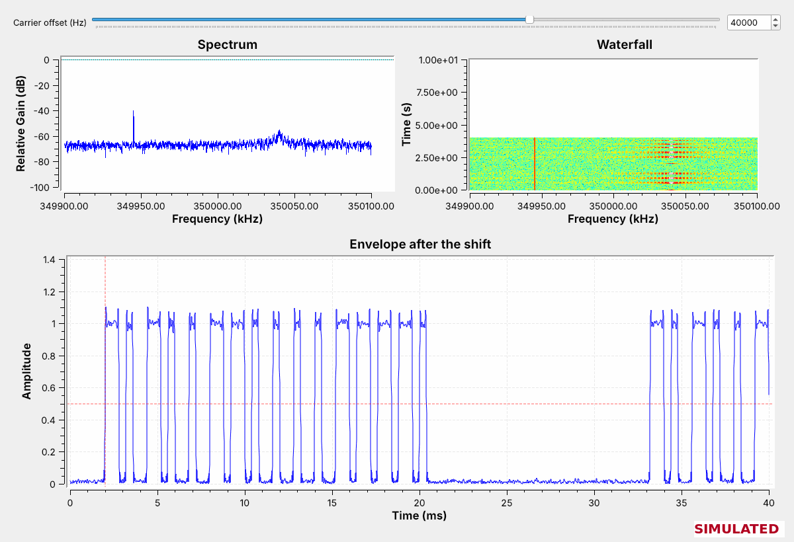
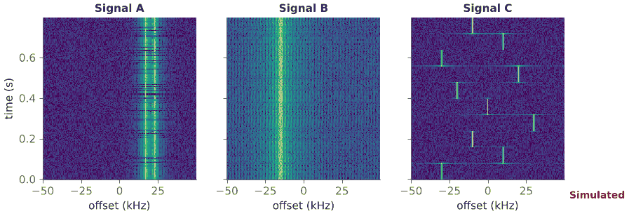
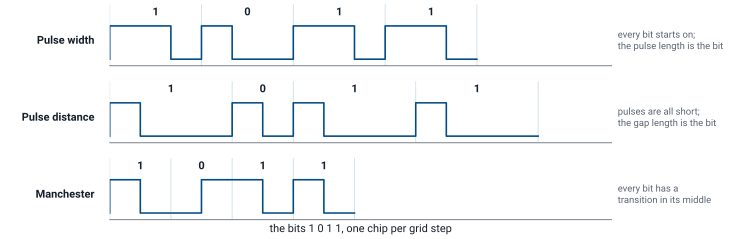
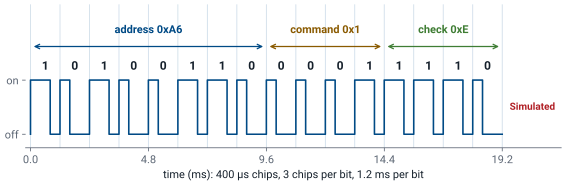
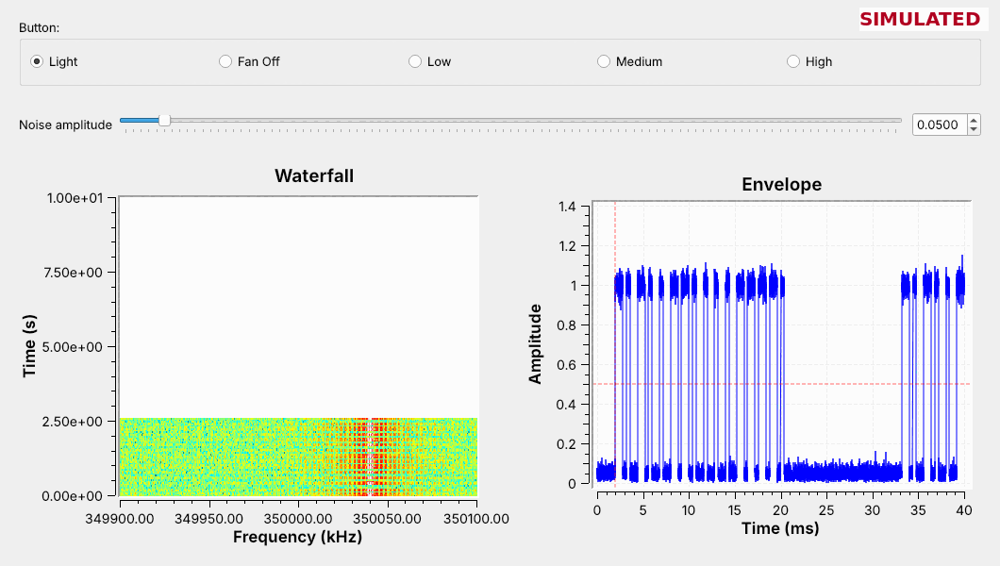

L17 - RF Reverse Engineering#
RF Reverse Engineering
Take an unknown signal from spectrum to bits with a PlutoSDR and GNU Radio.
Lesson 17 · Module 6: Waveform Applications & RF Reverse Engineering · Dr. Neil Rogers
Slides
Learning Objectives
- I can perform RF reverse engineering on an unknown signal: identify its modulation, symbol rate, and payload structure.
A Remote Nobody Described

A ceiling-fan remote sends five commands near 350 MHz, and no one gave us its manual.
Today we go from the recording to the bits, then build a transmitter for it.
Neil’s 2025 class reverse-engineered a Hunter ceiling-fan remote, a low-power transmitter near 350 MHz that operates under FCC Part 15. Not every cadet has that fan, so this lesson uses a Simulated fan remote of our own with five buttons: Light, Fan Off, Low, Medium, and High. Its recording, L17-fan-remote.sigmf-data, holds one press of each button, and the figure is that recording in L17-chips.grc, a GNU Radio flowgraph that reads each burst as a line of on and off chips.
The two lines of the objective from 2025 set the plan: reverse engineer a simple RF transmitter, and create a GNU Radio flowgraph that operates the fan. Lesson 11 found the bursts of a 433.92 MHz remote with an energy detector, and Lesson 12 keyed a carrier on and off. Today we read what those bursts say.
The Process

These are the five steps of the 2025 slides, in their order.
Steps 1 to 3 need only the recording.
The process comes from the 2025 slides. First we find the carrier, the frequency the transmitter uses. Next we identify the modulation, what the transmitter changes to send information. Then we identify the encoding: what the commands are, how the bits group into bytes or nibbles, and the bit rate and baud rate. With those three answers we build an encoder that produces the same signal, and last we transmit it.
Steps 1 to 3 work entirely from a recording, so they need no radio. Step 5 transmits: a cadet’s transmitter goes into a cable with an attenuator, or over the air at 915 MHz at low power only if the instructor says so, and the instructor closes the lesson by operating the real fan over the air. Every step runs in GNU Radio: a capture flowgraph finds the carrier, as in 2025, and L17-chips.grc takes the bursts apart.
The Recording
A recording a cadet downloads or makes in this course is a SigMF pair. The samples are in L17-fan-remote.sigmf-data, and L17-fan-remote.sigmf-meta is a short text file that says how to read them:
Field in the meta file |
Value |
What it sets |
|---|---|---|
|
|
complex float, 8 bytes a sample: the Output Type of the SigMF Source |
|
200000 |
|
|
350000000 |
the center of the recording, 350.000 MHz |
|
Simulated in GNU Radio; no radio |
where the recording came from |
|
the buttons, in the order pressed |
which burst is which |
GNU Radio 3.10 reads and writes this pair with the SigMF Source (Minimal) and SigMF Sink (Minimal) blocks. The source block is a File Source with SigMF documentation, so we point it at the .sigmf-data file and set its Output Type from core:datatype by hand. GRC marks both blocks as deprecated, because a fuller SigMF module is planned, but they work in 3.10 and draw no error. PySDR’s chapter on IQ files and SigMF describes the format.
The recording is 2.4 s long and 3.9 MB. L17-fan-remote-gen.grc made it: it keys a carrier 40 kHz above 350 MHz with each button’s frame, adds noise, and adds a weak steady carrier that has nothing to do with the remote.
Step 1: Find the Carrier

Run
L17-sigmf-view.grcand watch the waterfall while the recording loops.The steady line never changes; the remote is the one that bursts.
In 2025 the first tool was a GNU Radio capture flowgraph: a PlutoSDR Source, a SigMF Sink (Minimal) to record, and frequency, time, and waterfall sinks. That flowgraph is L17-capture.grc, with a PlutoSDR Source. L17-sigmf-view.grc is the same flowgraph with a SigMF Source in place of the radio: the recording, a Throttle, and a Frequency Sink and Waterfall Sink centered at 350 MHz. The recording loops, so the bursts come back every 2.4 s.
Two signals appear. A narrow line near 349.945 MHz stays on the whole time. The bursts near 350.04 MHz come and go five times per loop, once for each button press, and that is the remote. A real band holds many steady carriers, such as another receiver’s oscillator or a nearby digital clock, so the waterfall is how we tell them apart: the remote’s signal starts and stops when someone presses a button. The bursts are wider on the spectrum than the steady line because switching a carrier on and off spreads it.
Step 1: Shift the Carrier to 0 Hz

Set the carrier offset to 40000 Hz; the envelope plot fills with pulses.
Each frame lasts about 20 ms, and the frames repeat.
The Frequency Xlating FIR Filter shifts the frequency set by the Carrier offset slider down to 0 Hz and keeps \(\pm 10\) kHz around it, as in the GNU Radio wiki’s Frequency Shifting tutorial. A Complex to Mag block then gives the signal’s envelope, and the time sink triggers on a rising edge at 0.5, so it holds one frame still on screen.
At 40,000 Hz the pulses appear. In the 2025 class the next move was to fine-tune the carrier on a live spectrum; with a recording, the slider does the same thing. Move the offset 10 kHz away from 40 kHz and the pulses drop to half their height, because the signal now sits at the edge of the filter; move it 20 kHz away and they disappear. The carrier is at \(350.000 + 0.040 = 350.040\) MHz.
Explore: The Live Band on the PlutoSDR
Run
L17-explore-pluto.grcat 433.72 MHz and watch the waterfall.Step the center frequency to find bursts that start and stop.
Retune near 315 MHz and look again.
The recording showed one remote; the air around you holds many. L17-explore-pluto.grc is L17-capture.grc without the SigMF Sink: a PlutoSDR Source at 2 MS/s, the same spectrum, waterfall, and envelope displays, and a Center frequency control you can change while it runs. It records nothing, so the center frequency does not have to be set before it starts. It opens at 433.72 MHz, 200 kHz below 433.92 MHz, so the Pluto’s DC spike at the center stays off the devices.
Look for what Step 1 taught: a steady line is a carrier that never stops, and a remote, a doorbell, or a weather sensor paints short streaks that come and go. Weather sensors send on their own about once a minute, so wait a minute before you move on. If the whole spectrum rises when a strong signal appears, lower the RX gain. Then step the center frequency to 314.8 MHz and look again; the course Plutos are set to tune from 70 MHz to 6 GHz, so 315 MHz is in range. The Pluto only receives here.
SDR Flex is an optional quick look at the same band; nothing in this lesson needs it.
Capture a Real Remote
Record every button of a real 315 or 433.92 MHz key fob, doorbell, or sensor to SigMF.
Hold a button down and read its carrier off the spectrum, as in 2025.
Your Pluto only receives.
The 2025 class captured a real remote, and every step so far works the same on one. Take a key fob, a wireless doorbell, or a weather sensor that you own; in the U.S. most use 315 MHz or 433.92 MHz, FCC Part 15 frequencies. Find it first with L17-explore-pluto.grc, then run L17-capture.grc with the variable fc set about 200 kHz below the device’s frequency, so the Pluto’s DC spike stays off the signal. Set it before you start the flowgraph, because the SigMF Sink writes the center frequency into the meta file when the flowgraph starts. Press each button a few times, close the flowgraph, and rename capture.sigmf-data and .sigmf-meta for that button.
In 2025 the class fine-tuned the carrier on a live spectrum: hold a button down and read the peak off L17-explore-pluto.grc’s spectrum. Then open the recordings in L17-chips.grc as in Step 3. Receiving is always allowed, and your Pluto only receives in this step. A car key fob usually sends a rolling code, which changes with every press, so its frames will not repeat from press to press; the L17 Lab asks why.
Step 2: Identify the Modulation
The envelope switches between two levels, and the carrier’s frequency does not move.
That is on-off keying (OOK), Lesson 12’s keyed carrier.
The question for Step 2 is what the transmitter changes. The envelope plot shows the amplitude jumping between zero and one level, with nothing in between. The waterfall shows the bursts in one place; an FSK signal would show two tracks, as in Lesson 8, and a PSK signal would stay on at constant amplitude, as in Lesson 15. A carrier switched fully on and off is on-off keying (OOK), the simplest form of amplitude-shift keying (ASK). It is Lesson 12’s CW, keyed hundreds of times faster by a circuit instead of a hand.
Most simple remotes, doorbells, and weather sensors use OOK, because the transmitter is one oscillator and one switch, and the receiver needs only an envelope detector like Lesson 11’s.
SigID: Name the Signal

Open
L17-sigid-a,-b, and-cinL17-sigmf-view.grcand name each modulation.Set
samp_rateto 100000 andfcto 915e6 first.
The 2025 class practiced Step 2 on a set of unknown recordings, the SigID exercise: open each one in a frequency and waterfall flowgraph with a SigMF Source (Minimal) and say what it is. The three recordings here are Simulated, 0.8 s each at 100 kS/s; set rec to each file in turn. The figure shows their spectrograms, time going up.
Signal A has two lines 6 kHz apart and the energy moves between them: two-level FSK, as in Lesson 8. Signal B is one band that never switches off and does not move: PSK, here QPSK, as in Lesson 15; its envelope stays constant and a constellation plot would show its four phases. Signal C is a narrow tone that jumps to a new frequency every 80 ms: a frequency hopper, as in Lesson 16. The faint horizontal lines in C are FFT frames that straddle a hop.
Step 3: Read the Chips

Open the recording in
L17-chips.grcwith the carrier offset at 40000 Hz.Measure the shortest pulse on the envelope: 400 µs, 80 samples.
Set the chip length to 80 and read one line of chips per burst.
L17-chips.grc starts as Step 1’s flowgraph: the SigMF Source, the shift to 0 Hz, and Complex to Mag for the envelope. The time sink triggers at the threshold, so it holds a frame still. The shortest pulse lasts 400 µs, and at 200 kS/s that is \(200{,}000\ \text{S/s} \times 400\ \mu\text{s} = 80\) samples. We call each 400 µs slot a chip, because the next frame shows it takes more than one chip to make a bit.
The other branch turns the envelope into chips. Add Const subtracts the threshold, so on is above zero and off below, and Binary Slicer outputs a 1 or a 0 for every sample. A Keep 1 in N with N = 80 would keep one sample per chip, but it would start counting anywhere. The Chip Reader, a short Embedded Python Block saved in the .grc file, does the same keeping, but it starts at each burst’s first rising edge and takes the sample in the middle of each chip. After 8 off chips the burst has ended; when the next burst starts, the reader prints the line in GRC’s console with the pause, the off samples between the two bursts, and shows it in the window. The SigMF Source loops the recording, so the last burst prints too. The Envelope gain slider raises a weak capture’s pulses to about 1, so the threshold stays near 0.5.
Step 3: Chips to Bits

The fan remote’s chips come in threes:
110and100.Every bit starts on, and a long pulse is a 1: pulse-width coding.
The Chip Reader prints the Light button’s frame as 46 chips: 1101001101001001101101001001001001101101101101 pause 2560 samples. Split into groups of three, it starts 110 100 110 100 100 110 110 100, and every group is 110 or 100, which is pulse-width coding: each bit starts with the carrier on, a 1 stays on for two chips and a 0 for one, and each bit ends off. The figure shows it beside two other common schemes. In pulse-distance coding every pulse is short and the length of the gap carries the bit; in Manchester coding every bit has a transition in its middle, so the chips come in pairs. The figure draws a 1 as on then off; IEEE 802.3 Ethernet uses the opposite convention, so a Manchester device can use either.
A frame of 16 bits is 48 chips, yet the Chip Reader prints 46 or 47. The last chip of every bit is off, and a frame ending in a 0 ends in two off chips; the reader ends a line at its last on chip, so it counts those chips as part of the pause. We add them back.
Step 3: The Fields

Eight bits never change: the address.
Four bits change with the button: the command.
The last four are the command inverted: a check.
Reading every press the same way gives one 16-bit word per button:
Button |
Word |
Address |
Command |
Check |
|---|---|---|---|---|
Light |
0xA61E |
0xA6 |
0x1 |
0xE |
Fan Off |
0xA62D |
0xA6 |
0x2 |
0xD |
Low |
0xA63C |
0xA6 |
0x3 |
0xC |
Medium |
0xA64B |
0xA6 |
0x4 |
0xB |
High |
0xA65A |
0xA6 |
0x5 |
0xA |
The first byte is the same for every button, so it identifies the remote, the way the DIP switches inside a real fan remote pick its code. The third nibble counts up with the buttons. The last nibble is the third one with every bit flipped, so a receiver can reject a frame whose two nibbles disagree.
The 2025 Questions
The 2025 slides asked five questions about the encoding. For the Simulated fan remote, the answers come from the Chip Reader’s lines and the table above.
Question |
What the fan remote shows |
|---|---|
What fields would we expect in a simple message? |
an address that picks the fan, a command that picks the button, and a check |
How are 1s and 0s encoded? |
pulse width: |
Can we identify parts of the message from the captures? |
yes, by comparing the five buttons: the bits that never change are the address, and the bits that do are the command |
Is a command sent just once? |
no: each press sends the frame 6 times, with about 12 ms of silence between frames |
What else do you notice? |
the steady carrier at 349.945 MHz is not the remote, and each frame’s last off chips run into the pause |
The repeats let a receiver that misses one frame, to noise or to a collision with another remote, act on the next. They also mean that a press lasts about 190 ms, long enough to see on the waterfall.
Bit Rate and Baud Rate
The chip is the shortest thing the transmitter switches, so the baud rate, the rate the Chip Reader keeps samples at, is one chip per symbol. The bit rate counts data bits, and each bit takes three chips:
A frame of 16 bits takes \(16 \times 1.2 = 19.2\) ms, and with the 12 ms gap a frame starts every 31.2 ms. These are the numbers the encoder needs: its Repeat block holds each chip for chip_len samples, and its Stream Mux inserts the gap.
Pulse Decoder Explorer
The explorer draws one frame of the Simulated fan remote’s envelope and reads it the way the Chip Reader does: it divides the frame into chips of the chosen length from the first rising edge, compares the middle of each chip with the threshold, and groups the chips in threes. It opens at a chip length of 300 µs, which is wrong. Move the Chip length slider until no group is marked ?, then pick another button, then raise the noise.
Noise
Raise the explorer’s noise until the frame breaks.
Frames read cleanly to about 0.4; from about 0.45 the groups break apart.
Raise the Noise amplitude in the explorer a step at a time, and press new noise a few times at each step. Up to about 0.4 the envelope roughens but the frame reads correctly. From about 0.45 chips start to land on the wrong side of the threshold, and most often that breaks a group, so it reads as neither 110 nor 100 and shows ?; by 0.5 almost every frame has a broken group. Now and then a flipped chip turns one bit into the other instead, and then the frame still reads as 16 bits but the Frame readout says the check fails.
The Chip Reader shows the same thing on a real recording: as the signal weakens, its lines of chips stop matching from one repeat to the next. A receiver throws away a frame it cannot read. The check catches a frame that reads but has a wrong bit in the command; a flipped address bit passes it, and the frame then reads as another remote’s. Remotes repeat each frame so that one of the six tries usually gets through.
Step 4: Build an Encoder

Map turns a 0 into 4 and a 1 into 6; Unpack K Bits with K = 3 gives
100and110.Repeat and Stream Mux set the chip length and the gap.
The encoder is the 2025 hier block laid out flat. A Vector Source repeats the 16 bits of the chosen button’s word. A Map replaces each bit with a number whose binary form is its chip pattern, 0 with 4 (100) and 1 with 6 (110), and Unpack K Bits with \(K = 3\) writes those three bits out one at a time, most significant first. Repeat holds each chip for chip_len = 80 samples, 400 µs at 200 kS/s.
The Stream Mux takes \(48 \times 80 = 3840\) samples, one frame, from the encoder, then \(30 \times 80 = 2400\) samples of zero from a Constant Source, the 12 ms gap, and repeats. Float To Complex and a Multiply with a 40 kHz Signal Source put the envelope on the carrier, as Lesson 12’s keyer did. L17-encoder.grc packs the whole chain, from the Vector Source to the Multiply, into one hier block, as the 2025 class did and as the GNU Radio wiki’s Hier Blocks and Parameters tutorial describes. The Map comes before Unpack K Bits because it is the Map that turns each bit into its chip pattern.
Step 4: Check the Encoder

Run
L17-fan-tx-sim.grcand choose a button; compare the envelope with the recording.Open
my-fan-remote.sigmf-datainL17-chips.grc: the chips should match.
L17-fan-tx-sim.grc runs the encoder with no radio. Its envelope plot should match the recording’s frame for the same button, pulse for pulse, and its SigMF Sink writes what it makes to my-fan-remote.sigmf-data and .sigmf-meta while it runs. Run it for a few seconds, close it, and set rec in L17-chips.grc to my-fan-remote.sigmf-data: with the same settings as for L17-fan-remote.sigmf-data, the lines of chips should be identical.
That comparison is the test of the reverse engineering. If our encoder makes chips the original receiver would accept, we have found the carrier, the modulation, the encoding, and the fields correctly. One difference remains: the encoder repeats its frame for as long as it runs, while the remote stops after six.
The Hier Block

L17-encoder.grc is the encoder as a hier block, the form the 2025 class built: Vector Source, Map, Unpack K Bits, Repeat, Stream Mux, and a Multiply with a Signal Source, in one block with no inputs. Its parameters are the frame’s bits, the chip patterns, the chips per bit, the samples per chip, the gap, the carrier offset, and the sample rate, so the same block serves any pulse-coded remote of fixed bit length. Open it in GRC and press Generate once; GRC writes L17_ook_encoder.block.yml and its Python file to ~/.grc_gnuradio, and after you press the Reload Blocks button on the toolbar the block, L17 OOK Encoder, appears under ECE 448. The lesson’s flowgraphs use the same blocks laid out flat, so they open without that step.
Step 5: Transmit
L17-fan-tx-pluto.grcsends the encoder from a PlutoSDR at 915.04 MHz, not 350 MHz.Cadets: a 30 dB attenuator and a cable to a second PlutoSDR.
Instructor demo: the real fan, over the air, at very low power.
The last step puts the encoder on a radio. L17-fan-tx-pluto.grc is the simulation flowgraph at 1 MS/s, so chip_len is 400 samples, with a PlutoSDR Sink tuned to 915 MHz in place of the noise and the waterfall; the 40 kHz tone puts the carrier at 915.04 MHz. A signal the course makes never goes out on the real device’s frequency, so the encoder leaves the remote’s 350 MHz for 915 MHz. A short SMA cable with an inline 30 dB attenuator carries it to a second PlutoSDR running L17-capture.grc, with fc at its default of 915e6, which records what arrives at 1 MS/s as a SigMF pair. Open that recording in L17-chips.grc with samp_rate 1000000, fc 915e6, and a chip length of 400. Two Plutos’ clocks can disagree by several kilohertz at 915 MHz, so read the bursts’ offset off the capture’s spectrum and set the carrier offset to it, not to 40 kHz, and raise the Envelope gain until the pulses reach about 1: the chips should match L17-fan-remote.sigmf-data.
Cadets transmit into a cable with the 30 dB attenuator, or, if your instructor says so, over the air at 915 MHz at low power, and only when the lesson says to. 915 MHz is in the U.S. 902 to 928 MHz ISM band; the remote’s 350 MHz is an FCC Part 15 frequency, not an ISM band. The TX attenuation slider opens at 60 dB and cannot go below 30 dB; connect an antenna to this flowgraph only when your instructor says so.
The 2025 class ended by operating the fan, and this one does too, as an instructor demo. Dr. Rogers records the classroom’s Hunter fan remote, decodes it with the same steps, and sends its Light command from his own encoder flowgraph over the air, a few meters from the fan, at the lowest power that still works it. The fan answers a transmitter it has never seen, which is the point of the lesson: a fixed code has no way to tell the two apart. The cadet Pluto flowgraphs have been compiled but not run on a radio, so the L17 Lab is their first run on hardware.
Key Point
Reverse engineering runs in five steps: find the carrier, identify the modulation, identify the encoding, build an encoder, and transmit. An encoder whose output decodes the same as the recording confirms the first three.
Downloads
L17-fan-remote.sigmf-data and L17-fan-remote.sigmf-meta: the Simulated fan remote, one press of each button, 200 kS/s centered at 350 MHz, 3.9 MB. Keep the two files in the same folder.
L17-sigmf-view.grc: a SigMF recording’s spectrum and waterfall, a carrier-offset slider, and the envelope after the shift. Set
rec,samp_rate, andfcfrom the meta file. No hardware needed.L17-chips.grc: a SigMF recording’s envelope after the shift, with an envelope gain, a threshold, and the Chip Reader, which prints one line of chips per burst. Set
rec,samp_rate, andfcfrom the meta file. No hardware needed.L17-fan-tx-sim.grc: the encoder with a button chooser and a noise slider, recording to
my-fan-remote.sigmf-data. No hardware needed.L17-encoder.grc: the encoder as a hier block, L17 OOK Encoder. Press Generate once to install it.
L17-fan-remote-gen.grc: the flowgraph that made the recording. No hardware needed.
L17-sigid-a, -b, and -c (.sigmf-data), with a, b, and c meta files: three Simulated unknown signals for SigID, 0.8 s each at 100 kS/s, 640 KB each. L17-sigid-gen.grc made them.
L17-explore-pluto.grc: a PlutoSDR Source at 2 MS/s with spectrum, waterfall, and envelope displays and a center frequency you change while it runs. Receive only; records nothing.
L17-capture.grc: a PlutoSDR Source at 1 MS/s with spectrum, waterfall, and envelope displays, recording to
capture.sigmf-data. Receive only; needs a PlutoSDR. Setfcbefore you run it.L17-fan-tx-pluto.grc: the encoder on a PlutoSDR at 915.04 MHz. Transmit into the cable unless your instructor says otherwise, through a 30 dB attenuator, to a second PlutoSDR.
Optional: L17-capture-rtl.grc is
L17-capture.grcwith a Soapy RTL-SDR Source at 1.024 MS/s, if you own an RTL-SDR. Nothing in the lesson or lab needs it.GNU Radio wiki: Frequency Shifting and Hier Blocks and Parameters: the tutorials behind Steps 1 and 4.
PySDR: IQ Files and SigMF: the recording format.
SDR Flex: an optional quick look at a band.
Open a .grc file from GRC’s File menu, or run gnuradio-companion L17-sigmf-view.grc from the radioconda prompt, in the folder that holds the recording.
Summary
Step |
What we did |
The fan remote |
|---|---|---|
1. Carrier |
spectrum and waterfall, then shift to 0 Hz |
350.040 MHz; the steady line is not the remote |
2. Modulation |
what the envelope and the waterfall do |
OOK |
3. Encoding |
|
400 µs chips, 3-chip pulse width, 16 bits: address, command, check |
Rates |
chips and bits per second |
2500 baud, 833 bits/s, 6 frames a press |
4. Encoder |
Map, Unpack K Bits, Repeat, Stream Mux, carrier |
chips match the recording in |
5. Transmit |
PlutoSDR at 915 MHz into a cable with a 30 dB attenuator |
a second PlutoSDR records it as SigMF |
Noise |
watch the chips and the check |
bad frames fail the check |
Practice
Looking Ahead
The L17 Lab hands you a different remote’s recording and no description.
Lessons 18 and 19 decode signals whose formats are published: ADS-B and AIS.
The L17 Lab is today’s process on a device you have not seen. You get a SigMF recording of a Simulated remote with several buttons, with settings of its own, and you find its carrier, modulation, encoding, and fields, build an encoder for it from an empty canvas, check your encoder against the recording in L17-chips.grc, and then send it at 915 MHz through a PlutoSDR and a cable to a second PlutoSDR.
Lessons 18 and 19 receive aircraft and ship transponders. Their formats are public standards, so there the work is building and running the receiver rather than discovering the format.